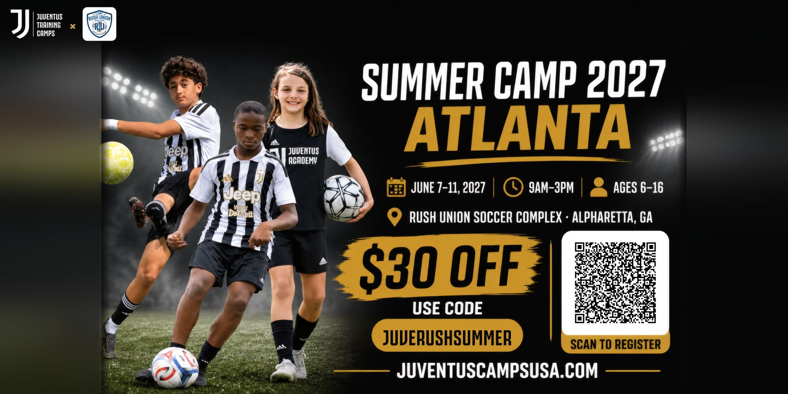
Banner físico · 6 × 3 ft · 150 dpi
Descargar PDF para imprimir (72 × 36 in)Banner físico de 6 × 3 ft para cada cancha y flyer digital por sede, con el código de $30 OFF del socio y un QR que lleva directo a la inscripción de esa sede.
| Sede | Socio | Fechas | Cancha | Código $30 OFF | Enlace del QR |
|---|---|---|---|---|---|
| Atlanta | Rush Union Soccer | Jun 7–11, 2027 | Rush Union Soccer Complex · Alpharetta, GA | JUVERUSHSUMMER | Abrir |
| Dallas | Soccer Spectrum | Jun 14–18, 2027 | Soccer Spectrum · Richardson, TX | Por confirmar | Abrir |
| Midland | Midland Athletic Syndicate | Jun 21–25, 2027 | Diamondback Energy Sports Complex · Midland, TX | Por confirmar | Abrir |
| Alabama | Por confirmar | May 31 – Jun 4, 2027 | Loxley Soccer Field · Loxley, AL | Por confirmar | Abrir |
| New Jersey | Holy Cross Preparatory Academy | Jul 19–23, 2027 | Holy Cross Preparatory School · Delran, NJ | Por confirmar | Abrir |
Tres conceptos con niños reales de nuestros camps, mostrados con Atlanta. El diseño lo hizo ChatGPT con una referencia, la fuente de Juventus y cada niño recreado en alta; el QR, el código y los logos los pusimos nosotros exactos. Los banners se escalaron para impresión. El concepto elegido se aplica a todas las sedes.
Póster deportivo oscuro con luces de estadio, los niños en acción, iconos dorados con los datos y el $30 OFF en pincelada dorada.

Banner físico · 6 × 3 ft · 150 dpi
Descargar PDF para imprimir (72 × 36 in)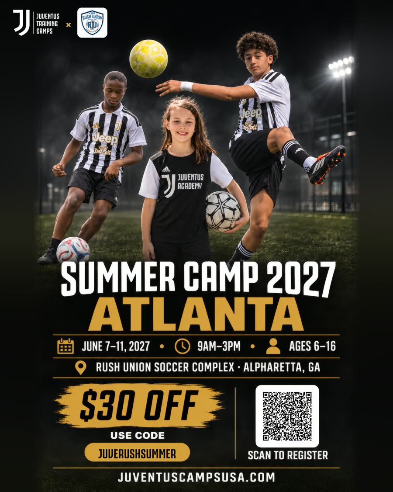
Flyer · post 4:5
Descargar PNG en HD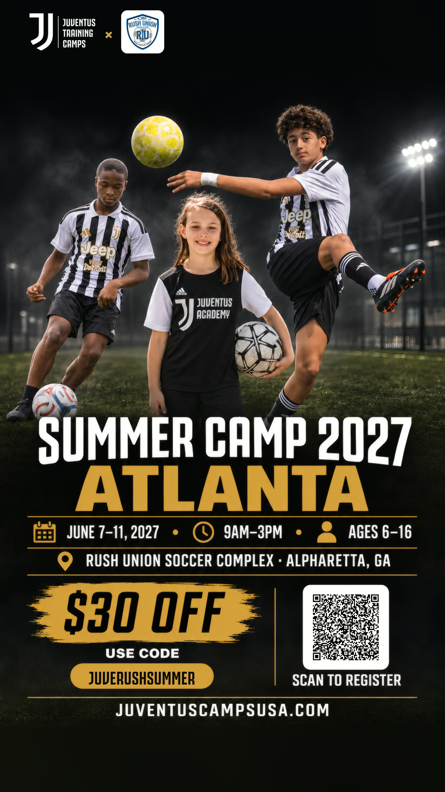
Historia · WhatsApp e Instagram 9:16
Descargar PNG en HD"SUMMER CAMP" enorme en letras caladas detrás de los niños, fondo negro con rayas bianconeri.
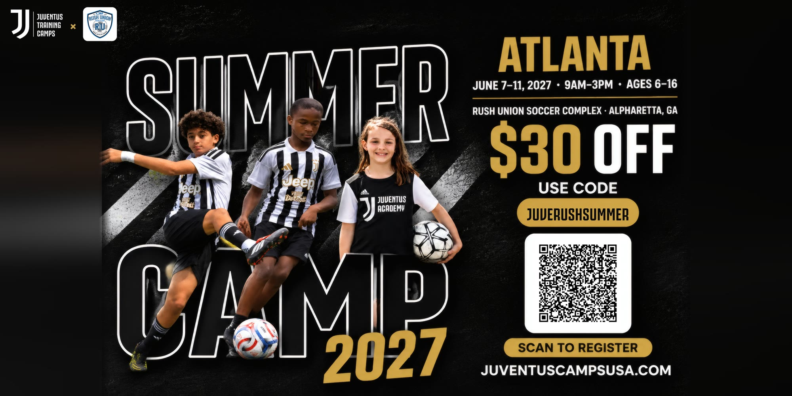
Banner físico · 6 × 3 ft · 150 dpi
Descargar PDF para imprimir (72 × 36 in)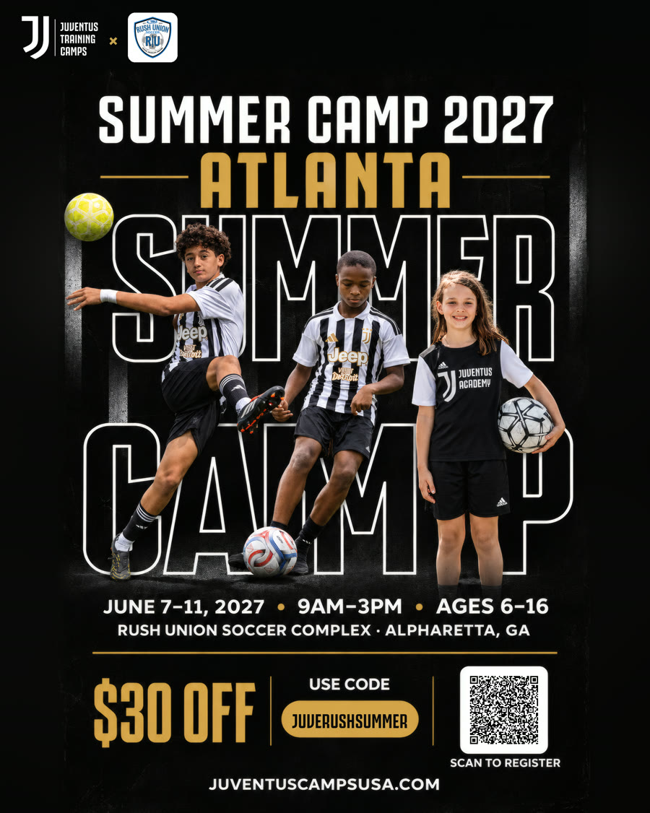
Flyer · post 4:5
Descargar PNG en HD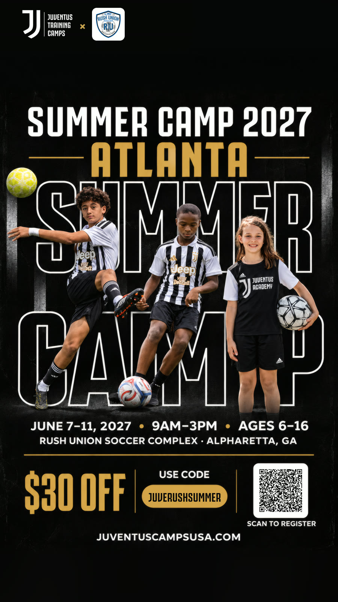
Historia · WhatsApp e Instagram 9:16
Descargar PNG en HDNuestro estilo de las campañas: skyline de Atlanta con cielo dramático, marco dorado y los niños saliendo de él.
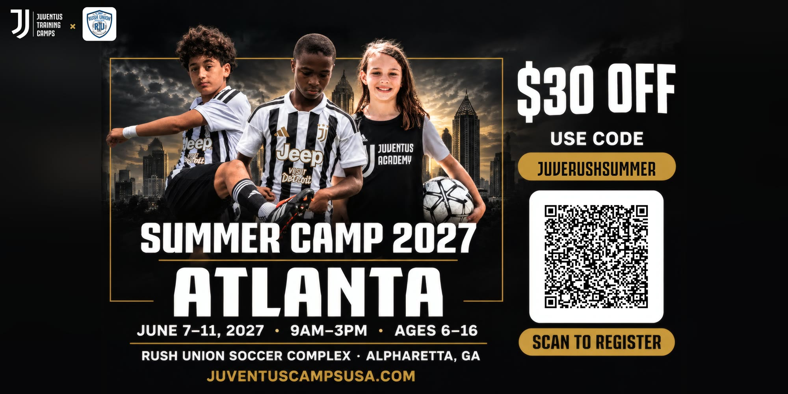
Banner físico · 6 × 3 ft · 150 dpi
Descargar PDF para imprimir (72 × 36 in)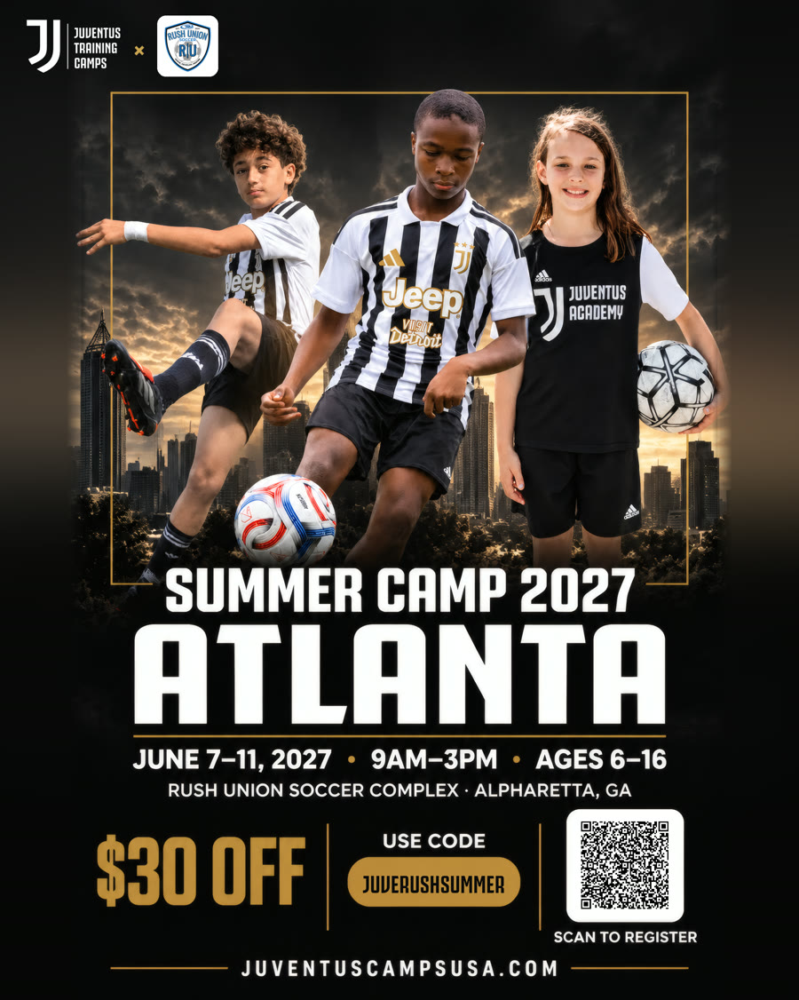
Flyer · post 4:5
Descargar PNG en HD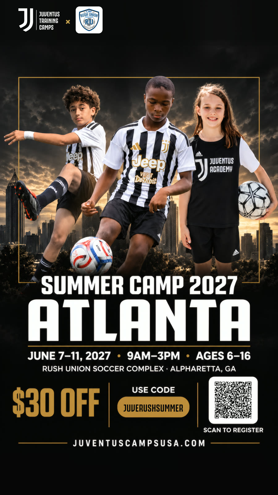
Historia · WhatsApp e Instagram 9:16
Descargar PNG en HDAlgunas de las piezas de Pinterest (summer camps de fútbol en EE. UU., México y otros países) que sirvieron de referencia (la 1.ª para el concepto 1 y la 2.ª para el concepto 2).
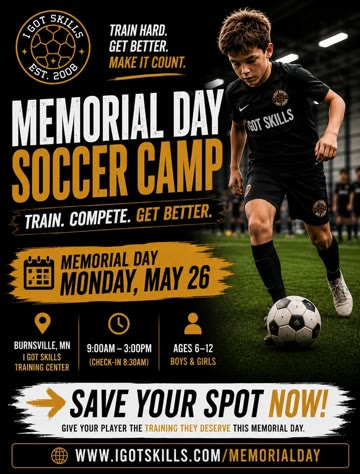
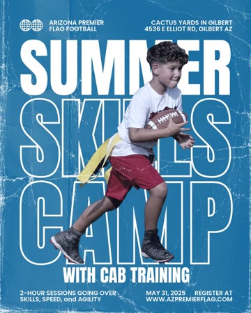
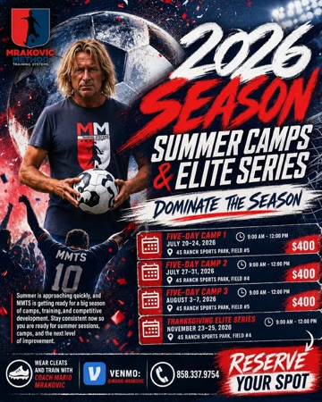
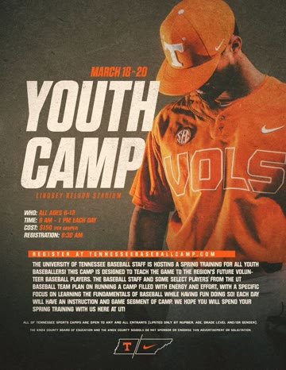
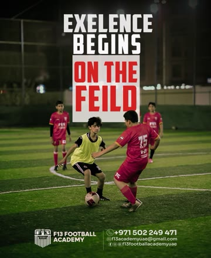
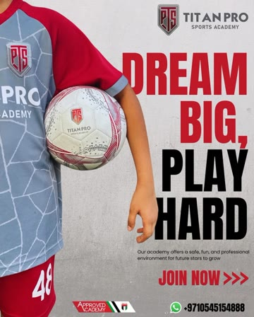
El logo de Rush Union solo existe en 500 px. Para el banner impreso se amplió sin cambiar el diseño, los colores ni las letras. Izquierda: original ampliado; derecha: versión mejorada.
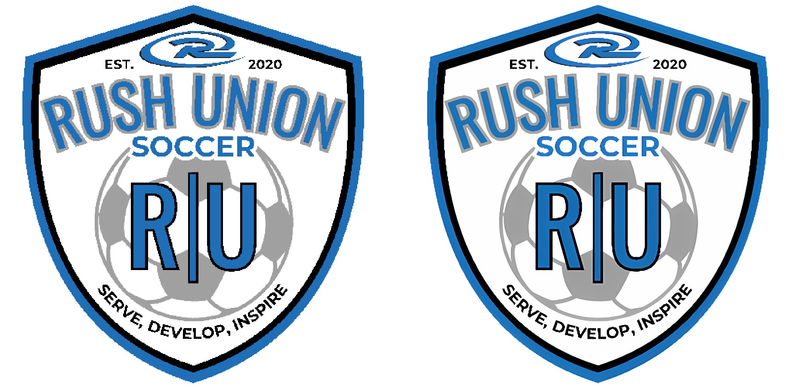